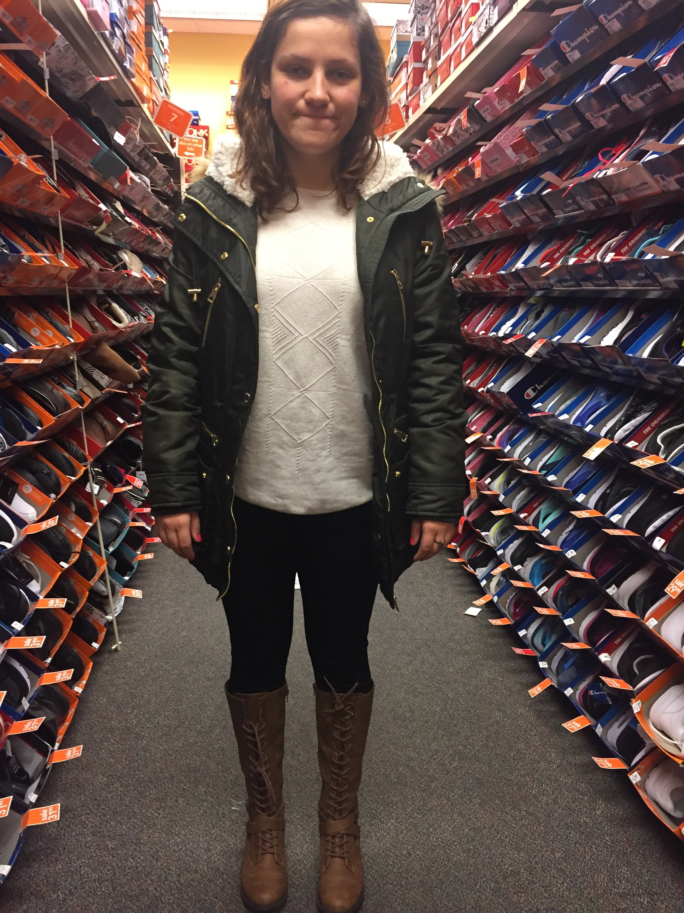

My name is Gabrijela Gavric, and thanks to the instruction of Epicodus, I have learned to create a basic webpage.
But before I showcase all that I have learned thus far, there are some thins you should know!
I was born in former Yugoslavia towards the end of their cival war, but sooen fled for safety and a better life. I am the second child of two wonderful parents, Ilija and Snjezana Gavric and a younger sister to an experienced graphic designer. Look at some his great work here.
I spend the majority of my free time outdoors; from daily adventures with my dog, scuba diving adventures with friends, to skiing withy father or picking fruit with my mother. You name it, I'm into it.
I decided to sign up for the Introductory Class to see if this was something I would enjoy as a carreer, and thus far my journey has been exciting and intriguing! I have no prior experience with computers, so this has been a great learning oppertunity.
